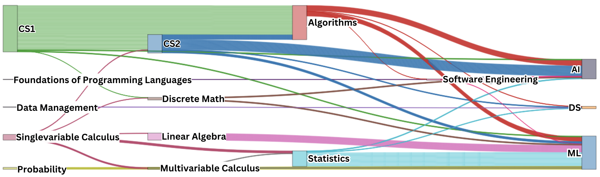
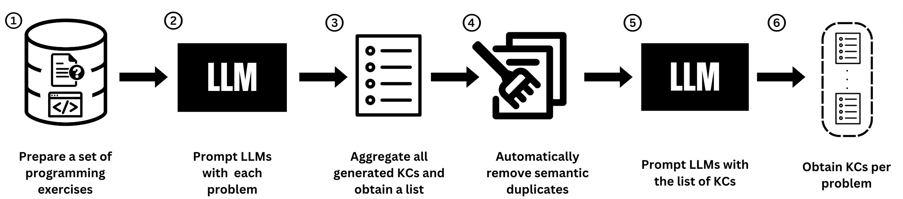
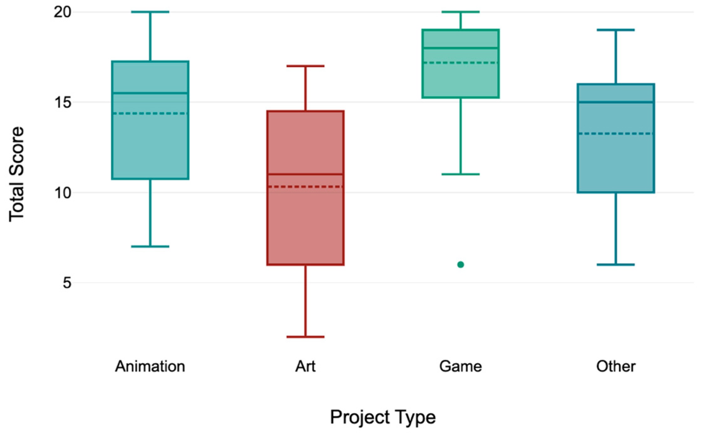

Research
Check out my Google Scholar for more!
Curriculum Pathways
How do varying prerequisite structures in AI/ML/DS courses shape student pathways and research opportunities? Institutions can explore innovative strategies to broaden access to these fields while maintaining the rigorous preparation necessary for success in research and industry.
Related Publication
Human-AI Interaction in Education
How can we leverage LLMs to streamline curriculum development for teachers and enhance student learning?
Related Publication
Gender Diversity and Computing Education
Do gender identifies infuluence Computational Thinking skill? This study explores how assessment biases in Scratch projects may contribute to the gender gap in Computer Science education.
Related Publication
